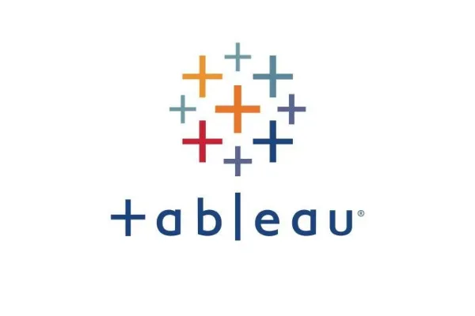

Cohort Analysis is a kind of behaviorial anaylytics that breaks the the data into a related groups before analysis. These group or cohorts usually share common traits or action within a defined time-span.
Cyclistic is an imaginery bike-share company. With the help of this analysis, tried to answer the behaviour of different types of riders. And how can cyclistic use digital media to influence casual riders to become members.

Here you will find my work using tableau, a powerful data visualization tool that allows me to create interactive dashboards and share insights with stakeholders in a compelling way. You can check out some of my Tableau projects by visiting my Tableau Public profile. There, you'll find examples of my work with data from a variety of sources. Each project demonstrates my ability to use Tableau to uncover key trends and insights, and to communicate those findings to non-technical audiences in an engaging and informative way.

In the wake of the COVID-19 pandemic, I was interested in exploring how data could help us better understand the impact of the virus on communities around the world. Using SQL, I conducted an exploratory analysis of COVID-19 data from a publicly available dataset. This analysis allowed me to identify patterns in the data related to infection rates, mortality rates, and other key metrics. By using SQL to manipulate and query the data, I was able to uncover insights that would have been difficult or impossible to see using traditional spreadsheet tools.
Created this porject as the part of the challenge by Maven anaylytics where contestents were supposed to create a single page dashboard for the Ski lovers to find their favorite destination for skiing.
This dahboard was created for a Hotel Chain to identify hotel's perfomance based on the key matrics which includes RevPar, DSRN, ADR, Occupancy% and Realisation%